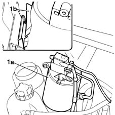
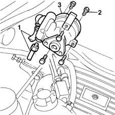

4130B20 power steering pump r r
- Path
- Procedures > 41 STEERING > 4130 POWER ASSISTED STEERING > 4130B power steering hydraulic sytem > 4130B20 power steering pump r r
- Kind
- repair procedure (removal / refitting; the operation number is the code)
- Applies to
- engines: 1.6 16v; all production periods
- Interactive page
- https://sloeber94.github.io/elrnDB-fMltpl/en/#/2891691
Applies to: engines: 1.6 16v; all production periods
 Removing
Removing
 Refitting
RefittingOpen the bonnet lid.
1092C14 power steering pump/self levelling suspension pump pulley - r + r with belt removed
Using a syringe, drain the fluid from the power assisted steering reservoir.
1. Remove the active charcoal filter (1a) from the fixing (1b) placing it outside of the working area.

Applies to: engines: 1.6 16v; all production periods
1. Disconnect the two fluid supply and return pipes from the power assisted steering pump.
2. Undo the bolts fixing the power assisted steering pump to the supports.
3. Remove the power steering pump.

Applies to: engines: 1.6 16v; all production periods
Refitting
RemovingPosition the power assisted steering pump on the supports.
Connect the two power assisted steering pump pipes.
Tighten the bolts fixing the power assisted steering pump to the front and rear support to torque.
 | Fastening | Component | Ø | Value (daNm) |
|---|---|---|---|---|
- | Bolt | POWER STEERING PUMP | M8 | 2.5 |
Place the active charcoal filter in the special housing.
1092C14 power steering pump/self levelling suspension pump pulley - r + r with belt removed
4130B14 Power assisted steering fluid reservoir CAP - R.R. - Check level and top up if necessary.
Topics linked from this page (2)
- 1092C14 power steering pump/self levelling suspension pump pulley - r + r with belt removed
- 4130B14 Power assisted steering fluid reservoir CAP - R.R. - Check level and top up if necessary.